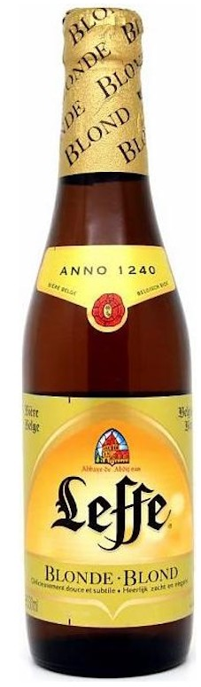

ПИВО LEFFE BLONDE
Бренд: Leffe
Страна: Бельгия
Категория: Пиво
Объём: 0.35 L
SKU: 786150000311
Описание:
Leffe Blonde — классическое бельгийское аббатское пиво с мягким телом и гармоничным вкусом. В аромате и послевкусии раскрываются деликатные ноты ванили, гвоздики, лёгкой медовой сладости и спелых фруктов. Пиво пьётся легко и оставляет чистый, сбалансированный финиш — отличный выбор и для спокойного вечера, и для гастропары.
История:
История Leffe начинается в аббатстве Notre-Dame de Leffe в Бельгии, где традиция пивоварения веками была частью монастырской жизни — символом гостеприимства и внимательного отношения к качеству. Со временем эта традиция превратилась в узнаваемый знак бельгийской пивной культуры: проверенные рецепты, отточенные опытом и современными технологиями. Leffe Blonde продолжает это наследие — золотистое пиво, вдохновлённое многовековой историей.